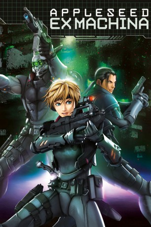

#1409 Appleseed Saga: Ex Machina
 
 IMDB-Wertung: 7.1 / 10
IMDB-Wertung: 7.1 / 10  Metascore: 0
Metascore: 0 
John Woo und Shinji Aramaki werfen ihr Talent in die Waagschale, um gemeinsam einen futuristischen Thriller nach der beliebten japanischen Manga-Serie von Shirow Masamune (Ghost in the Shell) zu schaffen. Deunan, Briareos und Tereus sind Soldaten in einer Spezialeinheit ihre Aufgabe: im Stadtstaat Olympus für Ruhe und Ordnung zu sorgen.
Jahr: 2007
Dauer: 105 Minuten
FSK: 12
Land: Japan Studio: Warner Home VideoTonspuren:
Untertitel: Deutsch,
Auflösung: 720p (1280x720) Größe: 4208 MB
Genre: Action, Thriller, Sci-Fi, Animation/Trick
Regisseur: Shinji Aramaki
Drehbuch: Shirow Masamune, Kiyoto Takeuchi, Todd Weinger
Soundtrack: Haruomi Hosono, Keigo Oyamada, Tetsuya Takahashi
Darsteller:
 David Matranga als Briareos
David Matranga als Briareos Shelley Calene-Black als Nike
Shelley Calene-Black als Nike- Chris Hutchison als Lance
- Mike MacRae als Aeacus
 John Gremillion als Kestner
John Gremillion als Kestner- Alice Fulks als Xander
- Kara Greenberg als Misc.
- Ai Kobayashi als Deunan Knute
 Kôichi Yamadera als Brialeos Hecatombcales
Kôichi Yamadera als Brialeos Hecatombcales- Yûji Kishi als Tereus
- Kong Kuwata als Aeacus
- Shinpachi Tsuji als Commander Lance
- Gara Takashima als Athena
- Rei Igarashi als Nike
- Rica Fukami als Yoshino
- Takaya Hashi als Dr. Kestner
 Miyuki Sawashiro als Hitomi
Miyuki Sawashiro als Hitomi- Yasuyuki Kase als Yoshitsune
- Takaya Kuroda als Arges
- Naoko Kouda als Dr. Xander
- Atsushi Imaruoka als
- Ken Yamaguchi als
- Youichi Nishijima als
- Masato Funaki als
- Takuo Kawamura als
- Koji Yoshida als
- Kôta Nemoto als
- Hisanori Koyatsu als
- Kenichi Mochizuki als
- Keiichi Kuwabara als
- Tadahisa Saizen als
- Kiyomi Asai als
- Eri Oono als
- Nao Takamori als
- Masafumi Kimura als
 Luci Christian als Deunan Knute
Luci Christian als Deunan Knute- Illich Guardiola als Terius
- Allison L. Sumrall als Athena
 Hilary Haag als Hitomi
Hilary Haag als Hitomi- Melissa Davis als Yoshino
- Quentin Haag als Arges
 Chris Patton als Yoshitsune
Chris Patton als Yoshitsune- Scott McClennen als
Datei: X:\HD-Anime-Collections\Appleseed\Appleseed Saga Ex Machina (2007, FSK12, 1280x720).mkv seit 30.06.2015
Festplatte: Gemischt-01+Anime
 Es gibt insgesamt 8 Filme in der Gruppe 'HD-Anime-Collections\Appleseed'
Es gibt insgesamt 8 Filme in der Gruppe 'HD-Anime-Collections\Appleseed'